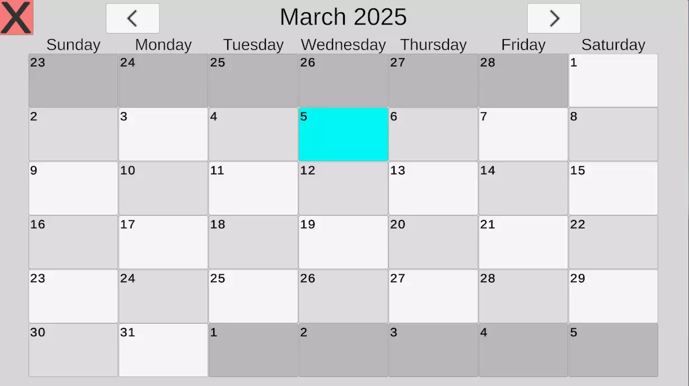

Bad Tides

Description
Bad Tides is a 4-player cooperative party game where players operate and upgrade a shared boat to hunt sea monsters, dive for valuable loot, and fish to survive and profit.
Bad Tides is under development by Crouton Games' indie team and is expected to launch on steam in Q3 of 2026.
Duties
- Project Management: As the founder of Crouton Games, I handle many of the project management duties including hiring, scheduling meetings, setting deadlines, and assigning work.
- Programming Team Lead: As the lead programmer, I coordinate with a 5 person team of programmers working on all aspects of Bad Tides' development.
- Specific Systems: Networking (syncing and joining lobbies especially), player movement and combat, NPC AI, HUD and menus, and many other general core systems.
Exodus of Descent
Description
Exodus of Descent is a dynamic third person online dungeon-looter RPG inspired by games such as Runescape, Dark and Darker, and Monster Hunter. Party up with your friends to run through intense PvE dungeons. Each dungeon contains challenging enemies, bosses, secrets to find, puzzles needed to solve, and 150+ lootable items including weapons, armor pieces, amulets, and crafting materials. Risk it all to Escape your Descent. Will you make it out alive?
Exodus of Descent is under development by Yooper Game Studios and is set to launch in 2026 on Steam.
Duties
- Systems: I worked on the inventory, crafting, shopping, and interaction systems.
- UI: I hooked up many systems to the player's HUD and created functioning menus for the inventory, crafting, and shopping.
- Multiplayer Elements: Some multiplayer elements I worked on included pinging, item dropping/sharing, and syncing interactables and loot over the network.
TF2dle
Description
TF2dle is a free wordle-like web game where players try to guess a weapon from team fortress 2 when given one of its stat lines in 5 tries.
TF2dle came out in 2024 and has had thousands of players. It continues to get hundreds of monthly browser plays on its Itch Page.
Duties
- Programming: Since this was a solo project completed in under a week, the programming was kept very simple. The game simply chooses a weapon from the 200+ weapons in TF2 and then displays one of it's stat lines. When the player guesses, it checks what categories are correct and what categories are wrong and displays that. If they got the right weapon, they win; if they guessed wrong 5 times, they lose.
- Data Collection: Because there is no database to pull the necessary data for weapons (name, stats, class, slot, damage type, and release year), a lot of the development time was used making a small dataset of 200+ items. To do this, I made an API to pull the data from the TF2 wiki. This actually exposed a lot of wrong info on the wiki which has been fixed since.
Project: Elementals
Description
Project: Elementals is a Sci-fi Action-RPG with choice based dialogue, third person elemental powers, and first person shooting.
Project: Elementals is unreleased with an unannounced release date on Steam.
Duties
- Item System: I adjusted the built in Lyra item system to allow for dropping items and additional item types.
- Weapon Design: I designed and created multiple weapons including sniper rifles, rocket launchers, and grenade launchers.
BlackJack Revamped
Description
BlackJack Revamped is a free mobile game where you can pick between 2 modes: Classic and Revamped. In classic, you play a normal game of blackjack against a bot. In revamped, you catch falling cards and play against the odds of a dynamically changing dealer's upcard.
There are no in app purchases or ways to gamble real money. Ads are only shown as rewarded ads to get some extra in game cash to play with if the player runs out of funds.
Features include leaderboards through firebase, achievements, rewarded ads through AdMob, and an offline mode.
BlackJack Revamped's servers were shutdown and the game was removed from the app store as the fully free system with no forced ads was not sustainable long term.
This was a great learning oportunity as my first solo published game.
Duties
- Systems: Since this was a solo project, I worked on all programming done for this game including both modes
- API Integration: I integrated Google AdMob for ads and Firestore Firebase for player data and leaderboards
- Publisher: I found testers and went through the google play store publishing process which, at the time, needed 20 active testers at once for a full week before it would publish on the store.
SciSpy: Match Mobile
Description
SciSpy: Match Mobile is a match 3 mobile game where the player must clear levels by reaching a minimum score and/or matching specific items in a given number of moves. There are abilities and a campaign.
This was my first contracted game development position which I worked on in college for Kelly Z Riley. After I graduated and moved, development was passed to a new team.
The full game is not available but a short demo is available on my github.
Duties
- Programming: I worked on the grid, economy system, and menus including title, settings, and level selector.
- Player Data: I used Firebase Firestore to save player data including level progress, achievements, and leaderboards.
Cubox
Description
Cubox is a 3D Blocky Open-World MMORPG where you can build, farm, craft, and fight. Explore biomes, dungeons and cities. Complete quests, rate player houses and tame pets.
Cubox is live on the web.
Duties
- Design: For Cubox, I worked as a monster and item designer and balancer. I managed a database of stats.
Light Detection System
Description
The Light Detection System is a Unity Asset available on the Unity Asset Store.
The asset includes 5 different methods of detecting light on an object. Helpful for stealth games or any game where objects need to know when they are exposed to light.
Features
- 5 methods of light detection:
- Raycats: The object gets every light within range (as well as any directional light enabled) and raycasts to it and calculates the amount of light on the object based on the light's intensity, distance, and exposure.
- Sky Render Texture: The object uses a camera to look towards the sun. It compresses the output and checks the average transparency of the texture to estimate the light exposure.
- Floor Render Texture: The object uses a camera to look at the ground and compares the average output color with manually set dark and lit colors to find exposure.
- Mixed: The object uses a camera to look at the sky like the sky render texture but then uses raycasts for every other light in range.
- Floor Override: The object uses floor render texture to check if the light falls between the min and max light level and if so, it does raycasts to calculate the exact exposure.
- Multi light support: Includes support for directional, point, spot, and area lights
More details found on the official documentation including breakdowns for the pros and cons of each method and their performance.
2D Mining System
Description
The 2D Mining System is a Unity Asset available on the Unity Asset Store.
The asset allows for terraria-like 2D cave generation and player mining/building
Features
- Procedural Generation: The system creates chunked areas either randomly or based on a seed.
- Mining and Building: Players can "paint" on the world allowing for mining and building.
- World Saving/loading: The world made by players can be saved into a seed and re loaded easily.
More details found on the official documentation including breakdowns on how the generation and updating works.
Ability System
Description
The Simple Ability System is a Unity Asset available on the Unity Asset Store.
The asset brings a modular ability system to any game.
Features
- Multiple Ability Types: The system comes with 2 built-in ability types: Projectiles and Auras and more types can be easily added.
- Built-in Projectile Features:
- Projectile speed
- Bouncing projectiles
- Sticky projectiles
- Penetrates Targets
- Built-in Aura Features:
- Buff and debuff auras
- Growing and shrinking auras
- Placed auras and auras that move with the user
- Ability Knockback: Both projectiles and auras can knock targets back.
- Ability Leveling: Both projectiles and auras can be set up to level up automatically or manually.
More details found on the official documentation including setup instructions and a settings breakdown.
Build System
Description
The Simple Building System is a Unity Asset available on the Unity Asset Store.
The asset allows for building runtime objects either on a grid or freely on any mesh or terrain.
Features
- Automatic Grid Generation: Given a terrain or mesh, this system can create a grid either in editor or during runtime. Objects can then be placed on the grid.
- Free Place Grids: On top of grid placements, grids can be setup to be free place meaning placed objects need not be perfectly snapped to the grid.
- Object Stacking: By making placable objects also have grids, objects can be stacked on top of each other.
- Easy Grid Customization: Settings make it very easy to customize grid size, cell size, placement modes, placement directions, and more.
More details found on the official documentation including setup and customization instructions as well as an in-depth settings breakdown.
Simple Calendar
Description
The Simple Calendar is a Unity Asset available on the Unity Asset Store.
The asset brings an interactable calendar to any 2D or 3D project.
Features
- A Simple Calendar: Can be a UI element or placed as an object in the world. The current day will always be highlighted.
- Interactable: Users can go forward and back through months and select specific days.

More details found on the official documentation including setup and customization instructions.
BEARCAR
Description
BEARCAR is a unique endless runner made in 1 day for the Jerbob's Silly Jam.
It can be found on itch.io.
The game included 3 levels where players must get to the end of the level where they unlock a new vehicle. There is an endless mode as well with all vehicles unlocked.
Players can dynamically transform into different bear themed vehicles that have different stats
Vehicles include:
- SkateBear: Slow, high jumping bear on a skateboard. Great for beginners and to slow down the game during hard sections.
- BearBike: Faster, lower jumping. A good way to ease into going faster for faster times on levels.
- BEARCAR: The fastest vehicle. Very low jumping and hard to control. Gets the fastest times though!
Nine Circles
Description
Nine Circles is a rogue-like boss rush game made in1 month for the Boss Rush Game Jam 2025.
It can be found on itch.io.
The game included 6 bosses on 2 maps. The player would fight a boss and would get money based on how quickly they beat it and how little damage they took.
They could buy upgrades between each boss including:
- Seals: objects that circled the player and did actions on rotations.
- Pacts: Upgrades that when bought would have a downside.
- Basic Upgrades: Simple upgrades like more speed, dashes, and damage.
Destiny's Choice
Description
Desiny's Choice is a short horror game made in 1 week for the Crazy Web Game Jam hosted by Unity in 2024.
It can be found on itch.io.
Players explore a creepy office and house where they find photo evidence as collectables, pick locks to get into rooms, and try to solve a murder case.
StarChart
Description
StarChart is a blackout 2D platformer where players play in almost complete darkness and try to find their way to the end of linear levels
Starchart was made in 1 week for TheXPlace's game jam.